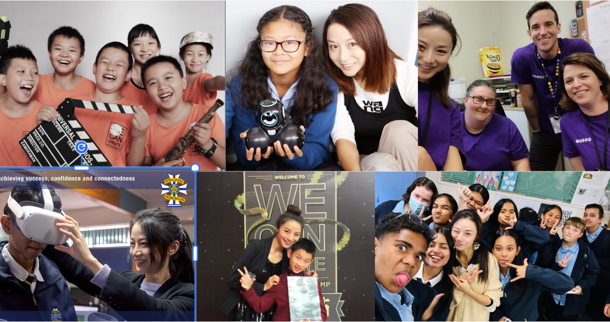

My name is Ms Yang and I am a Digital Technologies and Computer Science teacher at King’s College.
I enjoy helping students learn how technology works and how to create their own digital outcomes.

Outside of teaching, I enjoy being outdoors. I like kayaking and snorkelling, especially when I can explore new places and spend time near the ocean.
I also love dogs. My dog’s name is PEKKA and he is a big part of my life. He keeps me busy and always makes my day better.
As a Digital Technologies teacher, I enjoy working with programming, websites, and problem solving. I like teaching students how to break problems into smaller steps and think logically.
I believe learning technology is not just about writing code, but also about creativity, perseverance, and learning from mistakes.